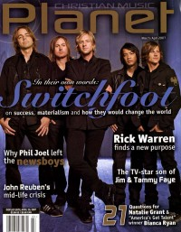
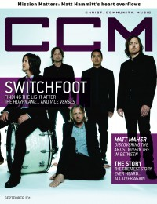
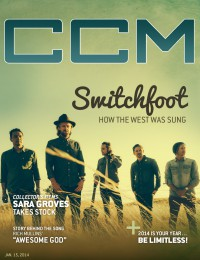
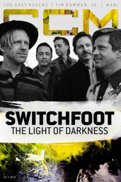

SwitchfootOn the cover
March 2007
Christian Music Planet |

September 2011
CCM Digital |

15 January 2014
CCM Digital |

1 July 2016
CCM Digital | Media coverage:- May 1997 in 7ball "The New Voices of Modern Music: Switchfoot", by Jeff Ebel
- May 1997 in CCM "The New Holy Order: Switchfoot"
- Jul 1997 in CCM "Talent Pool: Boy Wonders", by Laura Harris
- Sep 1997 in HM "Switchfoot", by Ginny McCabe
- Dec 1997 in CCM "In Concert: The Vic Theatre, Chicago, IL", by Lou Carlozo
- Jan 1998 in Campus Life "Rockin' The New Year", by MadDog
- Spr 1999 in FUEL "Blowing Up The Company Car", by Chris Estey
- Apr 1999 in CCM "Human Potential", by Lou Carlozo
- May 1999 in 7ball "Switching Gears", by Amy E. Dixon
- Mar 2000 in 7ball "Channelsurfing", by Kyle Minor
- Jan 2001 in 7ball "Balancing Act", by Kerry Maffeo
- Jan 2001 in CCM "End of the Innocence", by Lucas W. Hendrickson
- Jun 2001 in CCM "On Tour: 328 Performance Hall, Nashville, TN", by Lucas W. Hendrickson
- Jul 2001 in Campus Life "Music: We Just Wanna Play!", by Mark Moring
- Aug 2001 in CCM "Story Behind the Song: Love Is The Movement", by Shawn Hendricks
- Feb 2003 in CCM "One Fine Night at the Roxy: Switchfoot Adds To The Noise?", by Dan Ewald
- Mar 2003 in HM "Switchfoot", by Dan MacIntosh
- Mar 2003 in 7ball "Let Me Down Easy", by Jackie A. Chapman
- Mar 2003 in Relevant "Revolution of Being"
- Mar 2003 in Christian Single "Featured Artist: Switchfoot", by Lance Sittig
- Oct 2003 in CCM "Story Behind the Song: Meant To Live", by Andy Argyrakis
- Mar 2004 in CCM "The Verdict Is In: 'Rock & Roll Is Here To Stay'", by Anthony DeBarros
- Mar 2004 in CCM "Which Foot?", by Jay Swartzendruber
- May 2004 in CCM "Insider: Switchfoot, The Beautiful Letdown goes platinum"
- Jun 2005 in CCM "Sightings: Ready For Switchfoot's New "Sound"", by Jay Swartzendruber
- Sep 2005 in HM "Hardnews: Quick & Concise: Switchfoot"
- Oct 2005 in CCM "List-O-Rama: The KIDS Are Alright", by Chris Well
- Nov 2005 in Group "Culture: Ministry and Media: Switchfoot", by Bryan Belknap
- Mar 2006 in Ignite Your Faith "Classic(al) Christian Rock?"
- Apr 2006 in CCM "!Rock", by Andy Argyrakis
- Jun 2006 in CCM "Learning To Breathe", by Jay Swartzendruber
- Jun 2006 in CCM "Chem 6A: The Makings of a Band"
- Jun 2006 in CCM "Switchfoot - Why Now?", by Jon Foreman
- Jan 2007 in HM "Hardnews: Quick & Concise: Switchfoot"
- Jan 2007 in CCM "List-O-Rama: Book 'Em Jimbo: 5 Proofs of the Secret Connection Between Crime Stories and Christian Music", by Chris Well
- Feb 2007 in CCM "Poets, Preachers & Prophets", by John J. Thompson
- Feb 2007 in CCM "Standing Room Only: Oh! Gravity Tour", by Andy Argyrakis
- Mar 2007 in Christian Music Planet "Inside The Minds of Switchfoot", by Carol Crenshaw
- Mar 2007 in Relevant "Slices: The Switcheroo"
- Mar 2007 in Group "Culture: Ministry and Media: Switchfoot", by Bryan Belknap
- Jun 2007 in Ignite Your Faith "A Kingdom Higher Than Switchfoot"
- Aug 2007 in CCM "Sightings: Surfer's Paradise", by Chris Well
- Oct 2007 in CCM "What Now!: Switchfoot Goes Indie..."
- Nov 2009 in HM "Poster: Switchfoot"
- Nov 2009 in Group "Ideas: Ministry and Media: Switchfoot", by Scott Firestone IV
- Nov 2009 in Relevant "Switchfoot's Unexpected Journey", by Mark Lore, Roxanne Wieman
- Mar 2010 in CCM Digital "Just Sayin' Tour Spotlight: Hello Hurricane Tour, House of Blues, Chicago, IL", by Andy Argyrakis
- Aug 2010 in CCM Digital "Hit the Road: Something for the Rest of Us Tour, Charter One Pavilion, Chicago, IL", by Andy Argyrakis
- May 2011 in CCM Digital "Musicians Corner: In the Studio: Switchfoot", by Andrew Greer
- Jul 2011 in HM "Live Report: Canada, May 20", by Kevin Weddell
- Sep 2011 in Group "Ideas: Ministry and Media: Switchfoot", by Scott Firestone IV
- Sep 2011 in Relevant "The Reinvention of Switchfoot", by Kevin Selders
- Sep 2011 in CCM Digital "Out of the Storm", by Matt Conner
- Oct 2011 in HM "Faces Like Flint", by Doug Van Pelt
- Jan 2012 in HM "Poster: Switchfoot (Tim Foreman)"
- Jul 2012 in CCM Digital "Tour Spotlight: Vice Verses Tour, North Central College, Naperville, IL", by Andy Argyrakis
- Aug 2012 in HM "Hardnews: Quick & Concise: Switchfoot Headline Fall Tour"
- Oct 2012 in HM "Tales From The Conservative Underground: Just Like Everybody Else My Age", by Matt Francis
- Mar 2013 in Relevant "10: Back to the Future: 10 People Who Changed Everything", by Penny Carothers
- Nov 2013 in CCM Digital "Tour Spotlight: Fading West Tour, Copernicus Center, Chicago, IL", by Andy Argyrakis
- Jan 2014 in HM "Faded: Switchfoot's Journey West", by Robert Houston
- 15 Jan 2014 in CCM Digital "How the West Was Sung", by Caroline Lusk
- Mar 2014 in Relevant "The Drop: Switchfoot's Cinematic Journey: Band Returns to their Surfing Roots with New Film"
- 15 Jun 2014 in CCM Digital "Tour Spotlight: Fading West Tour, House of Blues, Chicago, IL", by Andy Argyrakis
- Mar 2016 in Worship Leader "Leadership: Interview: Switchfoot's Jon Foreman"
- 1 Jul 2016 in CCM Digital "The Light of Darkness", by Andrew Greer
- Sep 2016 in Relevant "Switchfoot", by Alex Duke
Albums & reviews:1999: New Way to Be Human
2000: Learning to Breathe
2003: The Beautiful Letdown
2004: Live in San Diego (DVD)
2004: The Early Years: 1997-2000
2010: Hello Hurricane [deluxe edition]
2014: The Edge of the Earth EP
2016: Where The Light Shines Through
2020: Covers - EP
2020: Switchfoot Backstage EP #9
2022: interrobang
2022: this is our Christmas album
2024: The Beautiful Letdown - Live from Los Angeles
Award Summary (Nominations / Wins)
Dove Awards1999 Dove Awards- Modern Rock/Alternative Recorded Song: "Underwater"
2000 Dove Awards2002 Dove Awards2004 Dove Awards2005 Dove Awards- Song: "Meant To Live"
- Song: "Dare You To Move"
- Group of the Year
- Artist
- Short Form Music Video: "Dare You To Move"
- Long Form Music Video: Live in San Diego (DVD)
- Rock/Contemporary Recorded Song: "Dare You To Move"
2006 Dove Awards- Artist
- Short Form Music Video: "Stars"
- Rock/Contemporary Recorded Song: "Stars"
- Rock/Contemporary Album: Nothing Is Sound
2008 Dove Awards- Short Form Music Video: "Awakening"
- Rock/Contemporary Recorded Song: "Awakening"
- Rock/Contemporary Album: Oh! Gravity
2009 Dove Awards2010 Dove Awards- Rock Recorded Song: "Mess Of Me"
- Rock/Contemporary Recorded Song: "Always"
2011 Dove Awards2012 Dove Awards- Rock Album: Vice Verses
- Rock Recorded Song: "Dark Horses"
2013 Dove Awards- Rock/Contemporary Recorded Song: "Afterlife"
2014 Dove Awards- Artist
- Long Form Music Video: Fading West
- Rock/Contemporary Recorded Song: "Love Alone Is Worth The Fight"
- Rock/Contemporary Album: Fading West
2015 Dove Awards- Rock/Contemporary Recorded Song: "Let It Out"
- Rock/Contemporary Album: The Edge of the Earth EP
2019 Dove Awards- Recorded Music Packaging: Native Tongue
- Rock/Contemporary Recorded Song: "Native Tongue"
- Rock/Contemporary Album: Native Tongue
2022 Dove Awards- Rock/Contemporary Album: interrobang
Grammy Awards2010 Grammy AwardsBillboard Music Video AwardsBooks about Switchfoot
- "Switchfoot" in The Encyclopedia of Contemporary Christian Music (Mark Allan Powell, 2002).
|